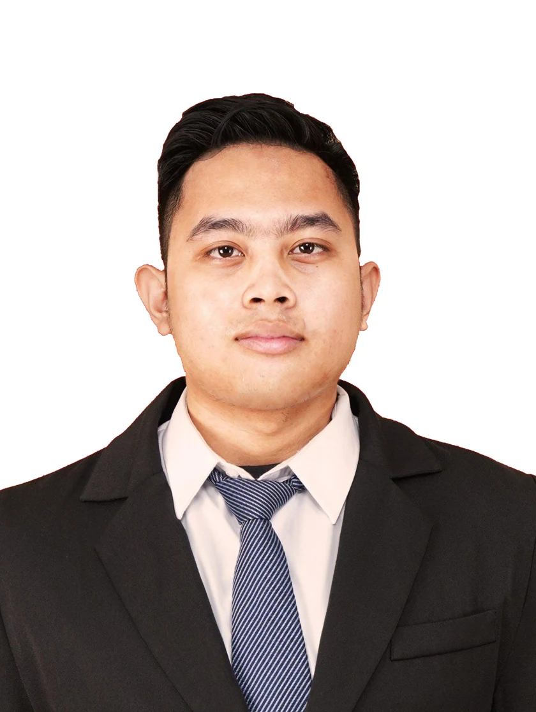

PORTFOLIO / MUNAWIR RAJABI
Menghubungkan data, proses, dan dampak nyata.
Saya berfokus pada Quality Assurance, Operational Excellence, dan solusi digital yang membuat proses kerja lebih terukur, efisien, dan dapat diandalkan.

BUILDING BETTER SYSTEMS
Munawir RajabiSaya percaya proses yang baik dimulai dari pertanyaan yang tepat.
Halo, saya Munawir. Lulusan Teknologi Informasi yang menggabungkan cara berpikir analitis dengan pengalaman langsung di lapangan operasional.
Berpengalaman dalam pengawasan kualitas, pemantauan KPI, evaluasi SOP, perbaikan proses, dan pengembangan alat monitoring berbasis data. Saya menikmati pekerjaan yang menjembatani tim operasional, kebutuhan bisnis, dan solusi digital yang benar-benar digunakan.
Lihat perjalanan karierSELECTED PROJECTS / 2025 — 2026
Bukan sekadar ide.
Solusi yang digunakan.
Pilihan inisiatif analisis, otomasi, perencanaan, dan kontrol kualitas. Visual yang ditampilkan berupa ilustrasi konsep, bukan data perusahaan yang sebenarnya.
Belajar dari lapangan.
Bertumbuh lewat tantangan.
Dari pengendalian jadwal proyek hingga perbaikan proses berbasis data—setiap peran membentuk cara saya memahami operasi secara menyeluruh.
Cara berpikir sistematis. Eksekusi yang praktis.
Perpaduan kompetensi operasional, metodologi perbaikan, dan kemampuan teknis untuk menerjemahkan masalah menjadi solusi.
Tetap ingin tahu.
Terus berkembang.
DOKUMEN ASLI / SERTIFIKASI
Bukti kompetensi & pembelajaran
Pratinjau sertifikat dan surat penunjukan. Klik dokumen untuk melihat versi asli di Google Drive.
Aktif di dunia transportasi & komunitas
Terlibat dalam kegiatan KAI Commuter, relawan layanan penumpang, KAI Expo, dan Kampus Mengajar—membentuk kemampuan komunikasi, koordinasi, dan pelayanan publik.
COMMUNITY • EDUCATION • HUMANITARIAN
Berbagi pengalaman.
Bertumbuh bersama.
Momen dari kegiatan kerelawanan, komunitas perkeretaapian, pendidikan, dan aksi kemanusiaan.
Foto dokumentasi pribadi dari kegiatan komunitas dan relawan.
Mari ciptakan dampak berikutnya.
Tertarik berdiskusi tentang peluang karier, kolaborasi, atau solusi pengembangan operasional? Saya senang terhubung dengan Anda.
Bogor / Jakarta, Indonesia · Open to opportunities